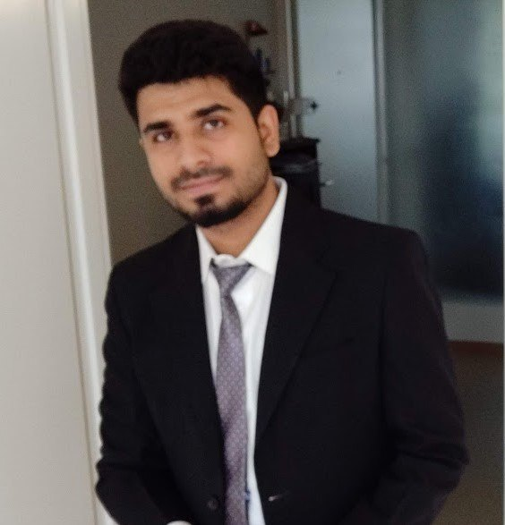
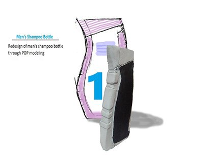

AI & systems engineering
End-to-end platforms, local LLMs, agentic workflows, reflective safety, Python services, APIs, automation and verification.
PythonFlaskLLMsAgents
Bolzano, Italy · Multidisciplinary technologist
My work connects human-centred AI, systems engineering, interaction design and experimental research—from reflective agents and learning platforms to industrial decision support and inclusive products.

One profile, multiple lenses
I am not limited to a single job title. I move between architecture, prototyping, experimentation and strategy depending on what a problem needs.
End-to-end platforms, local LLMs, agentic workflows, reflective safety, Python services, APIs, automation and verification.
Human decision-making, behavioural experiments, usability, cognitive heuristics, recommendation systems and quantitative analysis.
ERP/MES data, shop-floor prediction, simulation, human performance, reward mechanisms and Industry 5.0 decision support.
Physical computing, inclusive design, AR/VR, connected products, prototyping and translating complex technology into usable experiences.
Selected work
Use the filters to view the portfolio through a specific professional lens. Open any card for the system context, contribution and evidence.
System-level ownership of an AI pipeline that turns lecture video into structured, searchable and personalised learning material.
A privacy-preserving local agent that observes, plans, executes approved actions and independently checks its own work.
Prediction, simulation and human-performance models for flexible manufacturing using real ERP/MES data.
An experiment on how budget constraints, local cues and price heuristics affect adoption of sustainable recommendations.
A multi-model study of prompts that conceal user intent, paired with an intention-aware defence architecture.
A deep-learning system combining respiratory sound and radiography to reduce false negatives in COVID-19 screening.

Human-centred devices and applications for visual impairment, dementia support, emergency response and rural healthcare.
A multimodal framework using labelled gestures, expressions and VR to improve comprehension of Indian classical dance.
Design archive & live experiments
These projects show the practical design foundation behind my later systems and research work.
Research & evidence
The portfolio spans manufacturing systems, human behaviour, multimodal AI, interaction design, healthcare and cultural technology.
Experience
Bolzano, Italy
Reflective desktop agents, LLM evaluation, conversational safety and multidisciplinary research development.Free University of Bozen-Bolzano
EDUNEXT system architecture, AI learning pipelines, automation, agentic workflows and cross-team technical coordination.Free University of Bozen-Bolzano · GKN Sinter Metals
Human performance, task prediction, ERP/MES analytics, reward mechanisms, simulation and activity-based shop floors.National Institute of Design, Bangalore
Physical computing, multimodal interaction and hybrid environments.PES University, Bangalore
Founded and managed the Mechatronics & Interactive Smart Devices Lab; taught HCI, AI, AR/VR, game design and prototyping.Indian Institute of Science, Bangalore
Urban sustainability, systems analysis and carbon-footprint research.Tata Consultancy Services
Enterprise manufacturing software, structured delivery, issue resolution and cross-functional teamwork.Free University of Bozen-Bolzano, Italy
Indian Institute of Science, Bangalore · Government-funded scholarship
University of Kerala · Fourth university rank
How I approach complex work
Map stakeholders, constraints, data and actual behaviour before choosing a technology.
Connect software, models and interfaces into a testable end-to-end workflow.
Use experiments, metrics and user evidence rather than relying on technical novelty alone.
Add reflection, monitoring and recovery so the system becomes more dependable over time.
Contact
Currently based in Bolzano and open to multidisciplinary opportunities, research collaborations and technology projects in Italy and Europe.